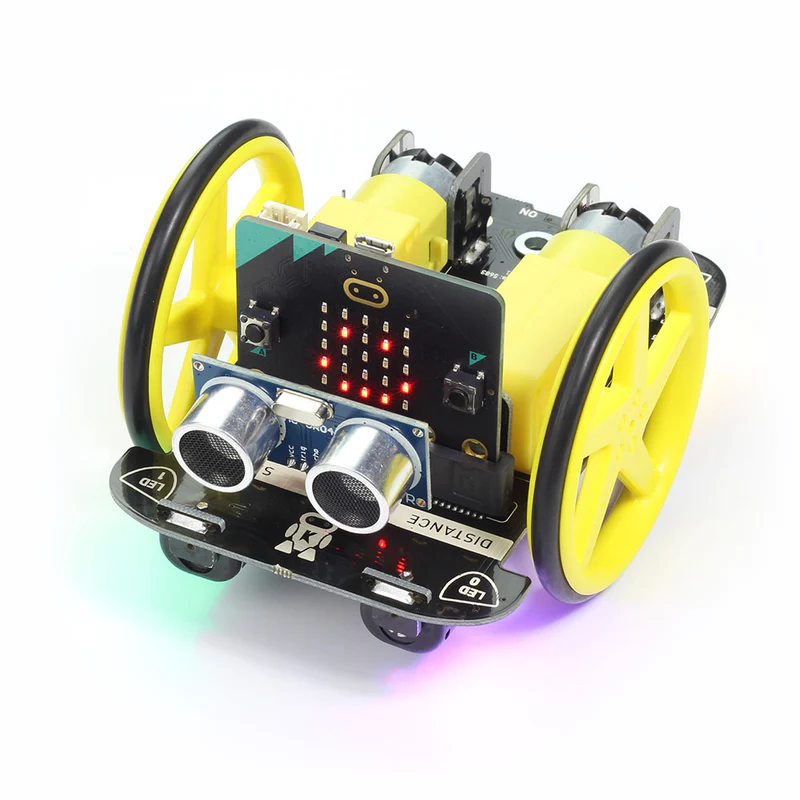

Erweiterungen für den Micro Bit
Contents
Erweiterungen für den Micro Bit#
E-Textiles 👕#
Lust auf Kleidung?

Rote und weiße LEDs die du aufnähen und dann mit dem Micro Bit einzeln oder gemeinsam ansteuern kannst.
Weitere Details findest du hier.
Move Motor 🤖#
Lust auf Roboter?
{kind=link}
Mit dieser Erweiterung kannst du den Microbit verwenden um einen Roboter zu bauen.
Neben zwei getrennt steuerbaren Motoren gibt es Ultraschallsensoren zur Abstandsmessung, einen Lichtsensor zum Linien-Folgen sowie ein kleines Mikrofon und einzeln steuerbare LEDs.
Weitere Details findest du hier.
Um diese Erweiterung in MakeCode verfügbar zu machen:
Fortgeschritten/Advanced
Erweiterungen
Füge https://github.com/waveshare/TouchPiano im Suchfeld ein
Clicke auf das Sucherergebnis zum Hinzfügen
Game Zip 🕹️#
Lust auf Spiele?

Diese Erweiterung bietet ein größeres Display aus 8x8 farbigen LEDs, mehrere Eingabeknöpfe und sogar Ton sowie Vibration.
Damit kann man Spiele wie beispielsweise Snake oder Pong spielen.
Weitere Details findest du hier.
Um diese Erweiterung in MakeCode verfügbar zu machen:
Fortgeschritten/Advanced
Erweiterungen
Suche nach „kitronik-zip-64“
Clicke auf das Sucherergebnis zum Hinzfügen
Touch Piano 🎹#
Lust auf Musik?

Mit dieser Erweiterung kann man Musik machen. Neben den Klaviertasten gibt es auch farbige LEDs.
Weitere Details findest du hier.
ZIP Halo 🌈#
Lust auf Animation und bunte Farben?

24 farbige, in einem Kreis angeordnete, LEDs die einzeln angesteuert werden können.
Weitere Details findest du hier